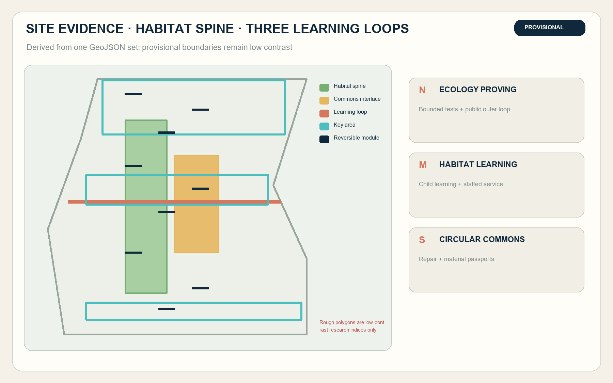
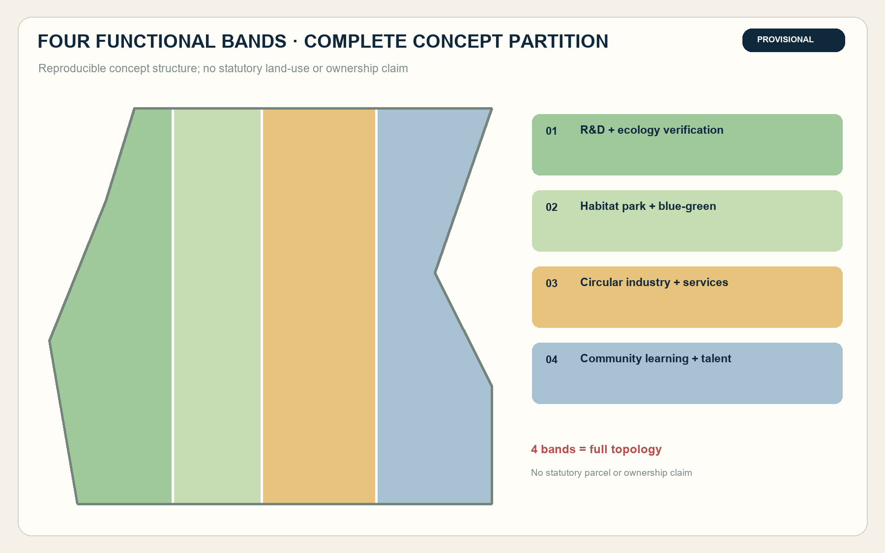
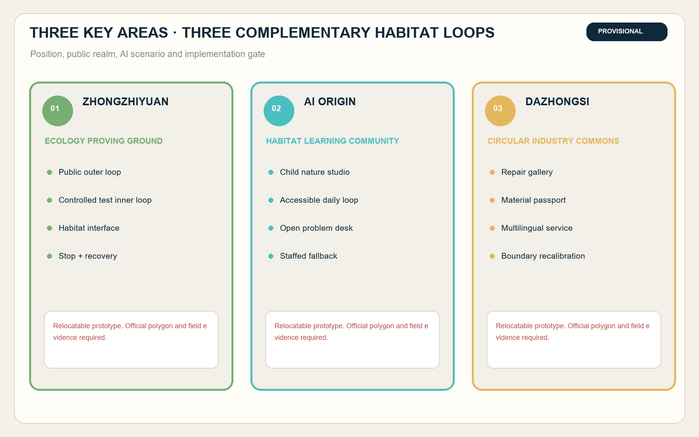
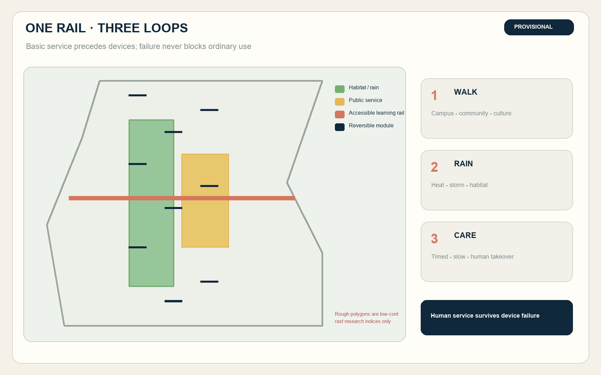
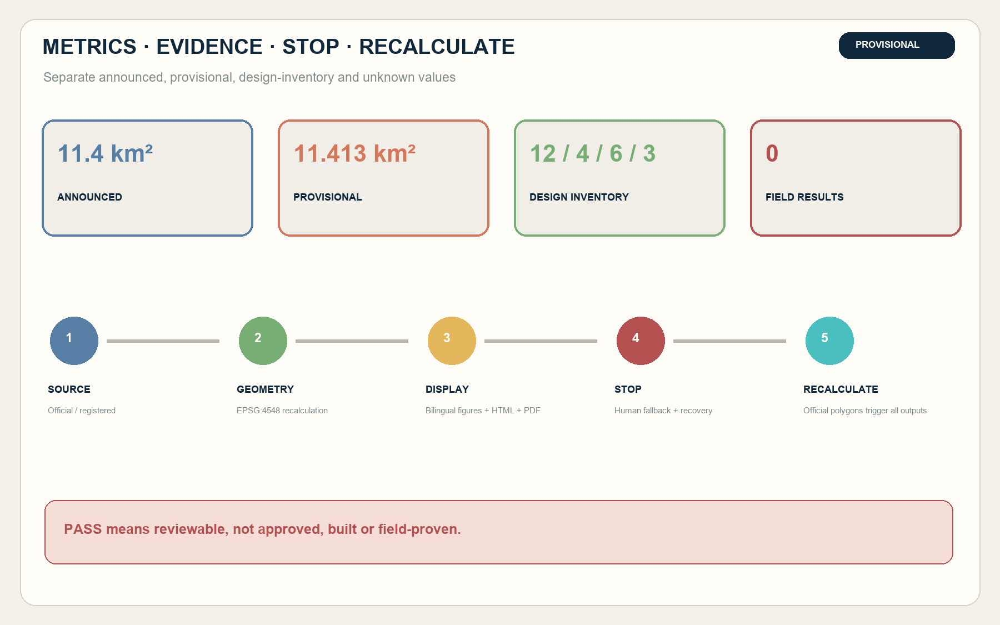

11.413 km²provisional geometry
12.34%concept habitat layer
7.33%concept public interface
12 / 4 / 6 / 3scenarios / tests / personas / landmarks
01 · FRAMEWORK
One habitat spine · three learning loops · nine reversible plots
The completed heritage park becomes an accessible habitat spine. Technology is detachable; ordinary passage, rest and staffed service remain when devices fail.


02 · KEY AREAS
Ecology proving ground · habitat learning community · circular industry commons

03 · SCENARIOS
12 scenarios · 4 industrial tests · 6 personas · 3 landmarks
01Accessible habitat navigation
02Heat and storm safety route
03Child habitat mapping
04Sourced railway-nature guide
05Garden maintenance assistant
06Health and quiet-route referral
07Low-impact sensing test
08Embodied-device habitat avoidance
09Edge-compute energy comparison
10Equipment material passport
11Multilingual public-service agent
12Habitat public-budget workshop

04 · GOVERNANCE
Human fallback · physical stop · recovery · full recalculation

Sources
Official announcement; Agent taskbook; repository source registry; Beijing Garden City Plan; national child-friendly and biodiversity guidance; six global innovation-district cases. Full provenance, dates, rights and limitations are in sources.json.
Assumptions
Official geometry, regulatory controls, ownership, utilities, habitat baseline and field authorization remain missing. All pilots are not_run and all locations are relocatable.